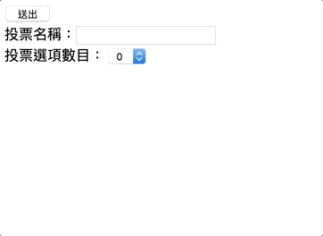
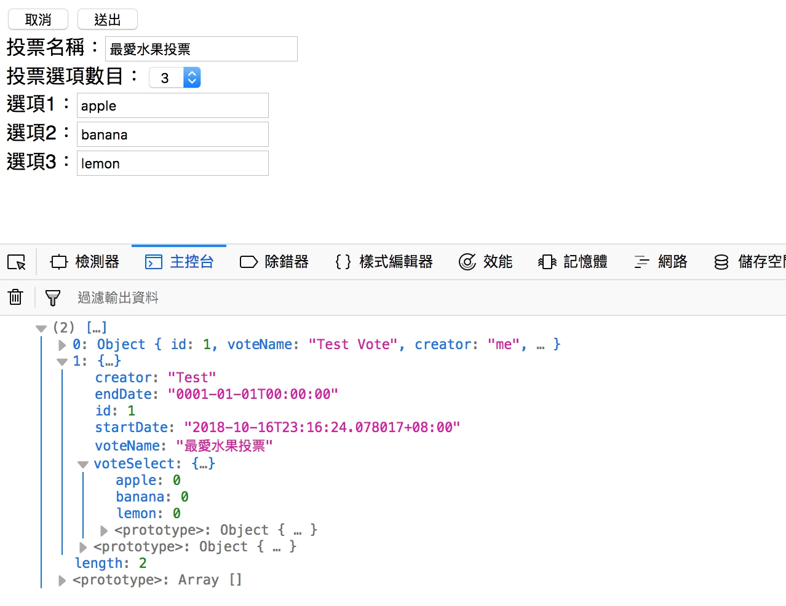

[鐵人賽Day18] 實作一個即時投票系統 (3) - 自訂投票內容
文章目錄
今天繼續把投票系統沒做完的做完吧，上一篇我們是從後端建立一個新的投票，今天我們要做成改成前端建立投票，然後讓大家進去投票，這個部分有點長，所以也是拆成2偏來講。
建立UI頁面
這邊我們不需要真的建立3個HTML，只要使用<div>元素拆成3個區塊。
建立3個區塊頁面
3個區塊頁面分別是投票選單、新增投票表單、投票區塊，一次只顯示一個區塊，沒用的區塊我們把他的CSS的display屬性設成none
<!-- 投票頁面 -->
<div id="vote" style="display:none">
<div class="canvas">
<canvas id="myChart"></canvas>
</div>
</div>
<!-- 所有投票選單 -->
<div id="voteMenu" style="display:none">
</div>
<!-- 新增投票區 -->
<div id="voteForm">
</div>
載入頁面DOM 物件
var voteRoom = document.getElementById('voteRoom');
var voteMenu = document.getElementById('voteMenu');
var voteForm = document.getElementById('voteForm');
建立新增投票表單
首先我們先來做投票表單部分，一個input做投票名稱，一個select元素用來動態建立選項input，建立一個div裡面放動態建立的投票選項input
<button id="cancelCreateVote" type="button">取消</button>
<button id="submit" type="button" >送出</button><br>
投票名稱：<input id="voteName" type="text"><br>
投票選項數目：
<select id="selCount">
<option>0</option>
<option>1</option>
<option>2</option>
<option>3</option>
<option>4</option>
<option>5</option>
</select>
<div id="voteSel">
</div>
建立selCount的change監聽事件，每次變動都會動態建立N個input選項
var selCount = document.getElementById('selCount');
var voteSel = document.getElementById('voteSel');
var submit = document.getElementById('submit');
selCount.addEventListener('change', function () {
voteSel.innerHTML = '';
var count = selCount.value;
for (var i = 0; i < count; i++) {
var input = document.createElement('input');
var br = document.createElement('br');
input.type = 'text';
input.id = `sel${i}`;
voteSel.append(`選項${i + 1}：`);
voteSel.appendChild(input);
voteSel.appendChild(br);
}
})
畫面大概像下圖

建立CreateVote方法
接下來我們要丟資料給ChartHub，ChartService上次已經建立過CreateVote()的方法了，所以不需要了再做一個，我們還需要一個GetVoteList來取得所有的投票資料。
VoteService.cs
public List<VoteModel> GetVoteList()
{
return voteModelList;
}
接下來在ChartHub建立一個新增投票的方法CreateVote()用來建立新的投票，建立完成記得回傳給所有人更新現有的投票列表
ChartHub.cs
public async Task CreateVote(string voteName,string[] voteSelect)
{
VoteModel voteModel = new VoteModel();
voteModel.voteName = voteName;
voteModel.creator = "Test";
voteModel.startDate = DateTime.Now;
Dictionary<string, int> _voteSelect = new Dictionary<string, int>();
for (int i = 0; i < voteSelect.Length; i++)
{
_voteSelect.Add(voteSelect[i], 0);
}
voteModel.voteSelect = _voteSelect;
_voteService.CreateVote(voteModel);
await Clients.Caller.SendAsync("ReceiveVoteList", _voteService.GetVoteList());
}
signalR前端呼叫和接收
接下來只要呼叫方法丟資料及建立接收方法就行，送出的方法記得要放在按鈕裡
submit.addEventListener('click', function () {
var voteName = document.getElementById('voteName');
var voteSelList = new Array();
var count = selCount.value;
for (var i = 0; i < count; i++) {
var sel = document.getElementById(`sel${i}`).value;
voteSelList.push(sel);
}
connection.invoke("CreateVote", voteName.value, voteSelList).catch(function (err) {
return console.error(err.toString());
});
})
接收的方法我們上一篇有建立過，不過我們這邊要改一下，變數名稱改成ReceiveVoteList，換成下面的
connection.on("ReceiveVoteList", function (json) {
console.log(json);
});
成功後會得到下面結果 
最後我們做返回鍵的事件，讓它可以返回投票列表頁。
document.getElementById('cancelCreateVote').addEventListener('click',function(){
voteForm.style.display = 'none';
voteMenu.style.display = '';
})
今天先這樣，明天來完成列表頁面，然後再跟建立投票這頁整合。